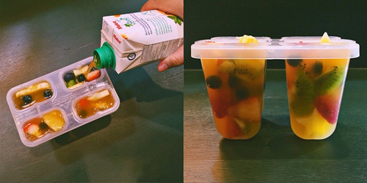
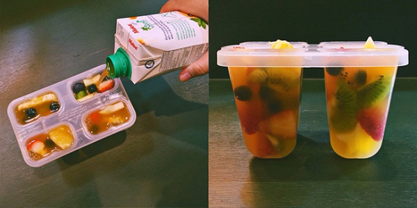

">
สายลดความอ้วนมาทางนี้ อยากกินขนมทั้งทีต้องห้ามอ้วน ! ขอมอบสูตรทำไอศกรีผลไม้แบบไม่ใช้เครื่องให้ลองทำกันดู อร่อยสดชื่นกินเพลินไม่ต้องกลัวอ้วน
สวัสดีค่า เฮลท์ตี้เกิร์ลที่ไม่ละทิ้งความหวานทุกคน...
เริ่มเข้าสู่อากาศร้อนอบอ้าวแล้ว ถึงเวลาลัลลา… ที่จะต้องหาไอศกรีมหวานเย็นดับร้อนตอนหิว ๆ ให้ชื่นใจกันหน่อย แต่เอ๊ะ! สำหรับใครที่กำลังคุมน้ำหนักคงจะหาไอศกรีมหวานฉ่ำแต่ไม่อ้วนได้ยากใช่ไหมล่ะ ต้องนี่เลยค่า ขอแนะนำไอศกรีม Fruit Pops สูตรโฮมเมด หวาน อร่อย แต่แคลอรีต่ำเตี้ยเรี่ยดินสุด ๆ 30 แคลอรีเท่านั้น แค่นั่งหายใจเฉย ๆ ก็เผาแคลอรี่หมดแล้ว โฮ๊ะ ๆ ๆ
สิ่งที่ต้องเตรียม
• น้ำผลไม้ตามชอบ (สำหรับเราเลือก Malee Light ค่ะ เป็นน้ำผลไม้แคลอรี่ต่ำ เขาใช้หญ้าหวานแทนน้ำตาลค่าให้ความหวานแบบที่เราชอบ แถมยังไม่อ้วนอีกด้วย หญ้าหวานไม่ให้พลังงานนะคะ แต่ให้รสหวานเหมือนน้ำตาลเลยล่ะ)
• ผลไม้ตามชอบ เช่น แอปเปิล, กีวี, สตรอว์บอร์รี และบลูเบอร์รี
• พิมพ์สำหรับทำไอศกรีม และไม้ไอศกรีม
วิธีทำ
• นำผลไม้มาหั่นเป็นชิ้น ๆ พอดีคำ เตรียมไว้ (สำหรับใครที่ชอบแอปเปิลแล้วอยากใส่ลงไปด้วยแต่กลัวดำ ให้หั่นแอปเปิลแล้วนำไปแช่น้ำเกลือไว้สักแป๊บหนึ่ง จะได้รสเค็ม ๆ หน่อยอร่อยไปอีกแบบ)
• จัดผลไม้ใส่ลงในพิมพ์ไอศกรีมให้แน่น (จัดใส่พิมพ์ไอศกรีมให้แน่น ๆ เลยนะคะ เวลากัดจะได้ชื่นใจกับเนื้อผลไม้เต็ม ๆ คำ)

• เทน้ำผลไม้ลงไป
• เสียบไม้ไอศกรีมแล้วนำไปแช่ตู้เย็นประมาณ 4-6 ชั่วโมง
• แกะออกจากพิมพ์ พร้อมรับประทาน
คุณ MMW สมาชิกเว็บไซต์พันทิปดอทคอม ยังเผยเคล็ดลับความฟินแบบไม่อ้วนไว้ด้วยว่า... สำหรับรสชาติของน้ำผลไม้หรือผลไม้ สามารถเปลี่ยนได้ตามใจชอบเลยเนอะ แต่สาว ๆ ที่อยากฟินแบบเฮลท์ตี้หน่อยก็เลือกน้ำผลไม้แบบ Low Sugar หรือที่ไม่เติมน้ำตาล แต่ใช้หญ้าหวานแทนแบบเราได้เลยค่ะ
อากาศร้อน ๆ แบบนี้ ลองถ้าได้ไอศกรีมผลไม้สดเย็น ๆ ถึงขั้วหัวใจแบบนี้ติดตู้เย็นเอาไว้ วันหยุดก็ไม่ต้องเสียเงินไปออกไปเดินรับแอร์เย็น ๆ ที่ห้างสรรพสินค้าแล้วล่ะ ฟินอยู่บ้านกันให้ชุ่มฉ่ำกันไปเลย
ขอขอบคุณข้อมูลและภาพประกอบจาก
คุณ MMW สมาชิกเว็บไซต์พันทิปดอทคอม
วิธีทำ
• นำผลไม้มาหั่นเป็นชิ้น ๆ พอดีคำ เตรียมไว้ (สำหรับใครที่ชอบแอปเปิลแล้วอยากใส่ลงไปด้วยแต่กลัวดำ ให้หั่นแอปเปิลแล้วนำไปแช่น้ำเกลือไว้สักแป๊บหนึ่ง จะได้รสเค็ม ๆ หน่อยอร่อยไปอีกแบบ)
• จัดผลไม้ใส่ลงในพิมพ์ไอศกรีมให้แน่น (จัดใส่พิมพ์ไอศกรีมให้แน่น ๆ เลยนะคะ เวลากัดจะได้ชื่นใจกับเนื้อผลไม้เต็ม ๆ คำ)

• เสียบไม้ไอศกรีมแล้วนำไปแช่ตู้เย็นประมาณ 4-6 ชั่วโมง
• แกะออกจากพิมพ์ พร้อมรับประทาน
คุณ MMW สมาชิกเว็บไซต์พันทิปดอทคอม ยังเผยเคล็ดลับความฟินแบบไม่อ้วนไว้ด้วยว่า... สำหรับรสชาติของน้ำผลไม้หรือผลไม้ สามารถเปลี่ยนได้ตามใจชอบเลยเนอะ แต่สาว ๆ ที่อยากฟินแบบเฮลท์ตี้หน่อยก็เลือกน้ำผลไม้แบบ Low Sugar หรือที่ไม่เติมน้ำตาล แต่ใช้หญ้าหวานแทนแบบเราได้เลยค่ะ
อากาศร้อน ๆ แบบนี้ ลองถ้าได้ไอศกรีมผลไม้สดเย็น ๆ ถึงขั้วหัวใจแบบนี้ติดตู้เย็นเอาไว้ วันหยุดก็ไม่ต้องเสียเงินไปออกไปเดินรับแอร์เย็น ๆ ที่ห้างสรรพสินค้าแล้วล่ะ ฟินอยู่บ้านกันให้ชุ่มฉ่ำกันไปเลย
คุณ MMW สมาชิกเว็บไซต์พันทิปดอทคอม